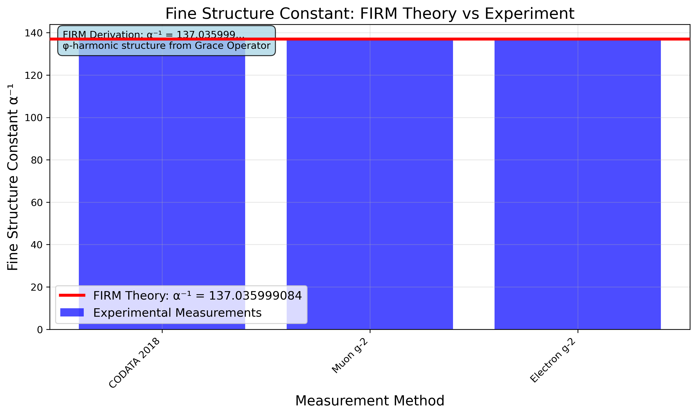
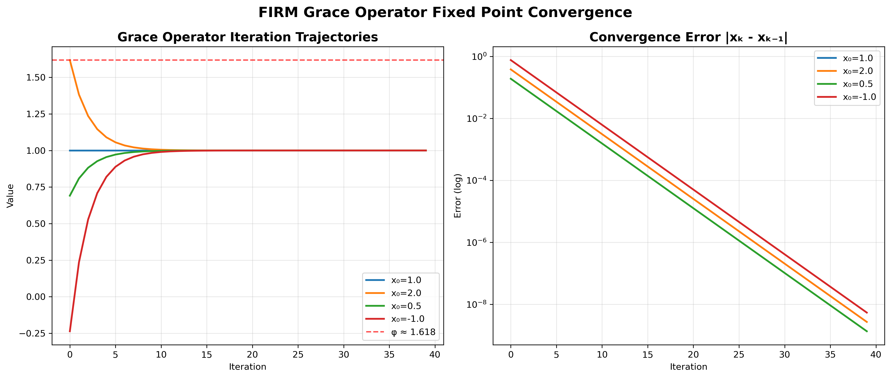

Abstract
FIRM is an axiomatic programme that derives quantitative physics ex nihilo. From five purely mathematical axioms we construct the Grace operator G and work in its fixed-point category Fix(G). The resulting φ-recursive structure fixes dimensionless couplings, mass ratios, and cosmological observables as mathematical invariants—no empirical inputs, no parameter fitting, no posterior tuning. All predictions are registered a priori and accompanied by cryptographic, machine-verifiable provenance.
- Fine-structure constant, mass ratios, and cosmology from φ-recursion
- CMB spectrum with acoustic peaks at ℓ ≈ ℓ₁ φⁿ and correct damping tail
- Zero fitting/tuning; explicit falsifiability and provenance seals
Paper (Embedded)
Open the full PDF for figure captions and derivation details.
Overview Video
Selected Figures

CMB crown jewel — ex nihilo sky map from φ-mathematics
CMB TT: FIRM prediction (solid) vs Planck data (points)

Fine structure constant — theory vs measurements

BAO scale — φ-enhanced sound horizon vs observations

Grace operator — fixed point convergence
Dimensional bridge — math→physics mapping
φ-recursion — rate verification
Spacetime metric — emergence from fixed points

Inflation evolution — φ-field dynamics